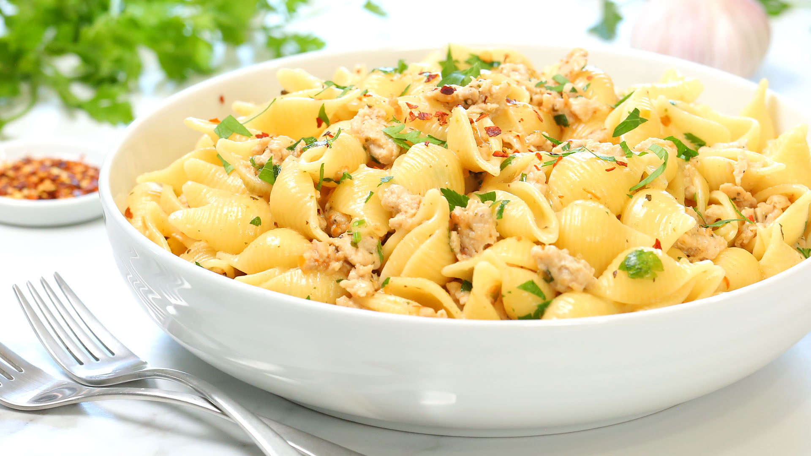

GARLIC CHICKEN PASTA

Description
All of us at one point in time have imagined eating a scrumptous creamy whites pasta. The following is the recipe for that very same delicious creamy chicken garlic pasta. Ingredients you will need to make are the following.
- 1 lb small dried pasta shells
- 1 tbsp oil
- 1 lb ground chicken
- 2 garlic cloves
- 1 tbsp Italian seasoning
- 1 cup chicken broth
- 1 cup Parmesean cheese
- salt and pepper to taste
Steps
- Boil the pasta in salted water according to the directions on its package
- Heat the oil in a pan whilst the pasta is getting boiled
- Put the chicken to the medium heated oil and cook it. Add salt and pepper to taste
- When the chicken starts to turn little brown, add the garlic and the italian seasoning. Continue to cook for another 30-45 seconds till the seasoning becomes fragrant.
- Add the chicken broth and bring the mixture to a simmer
- Now transfer the cooked pasta along with half cup of the pasta water and mix well
- Add the grated Parmesean cheese and continue till the cheese it melted
- Serve immediately